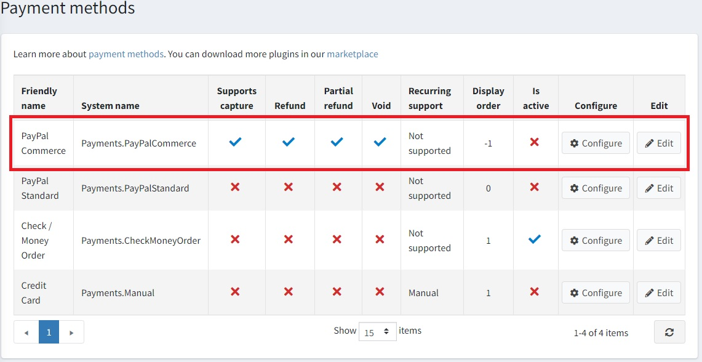
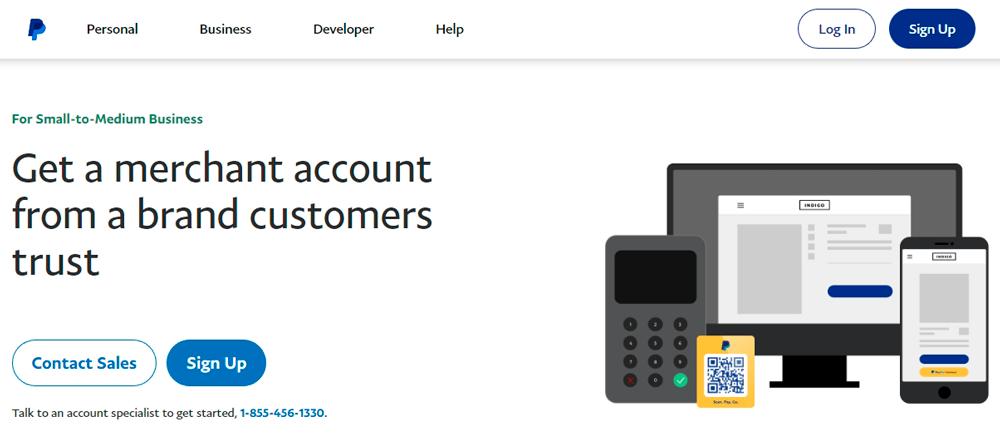
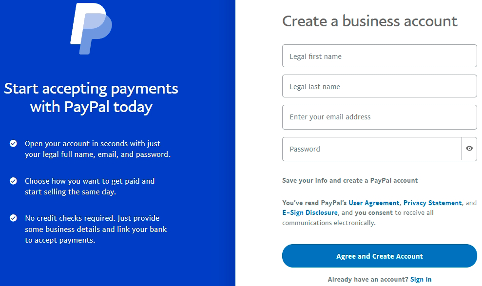
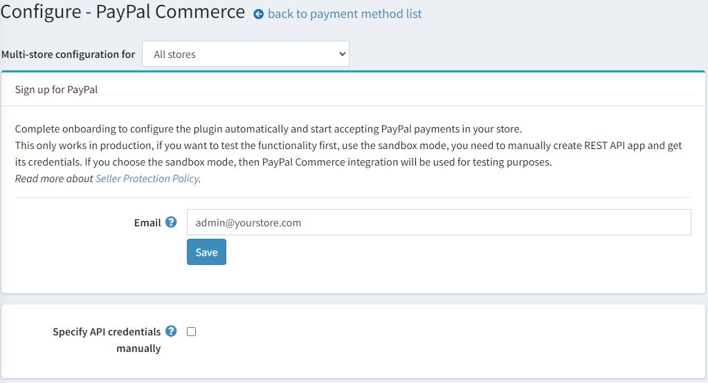
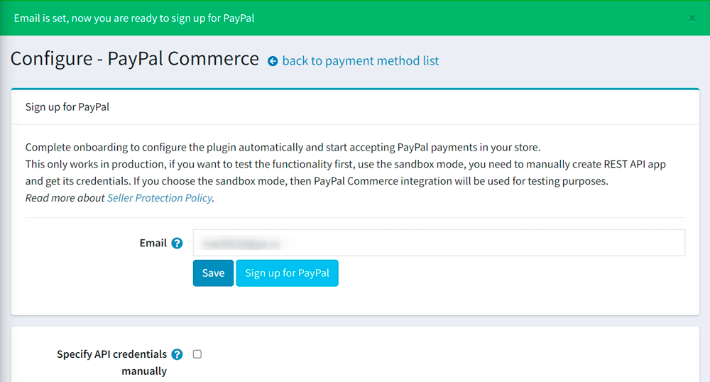
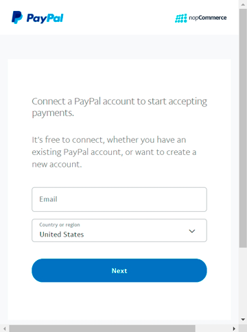
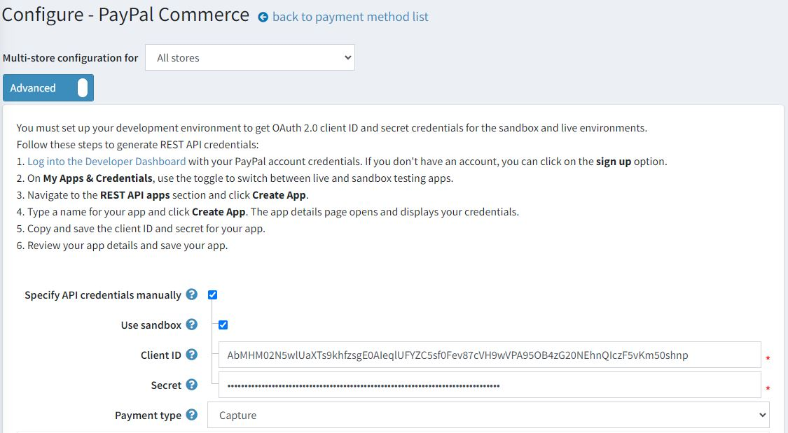
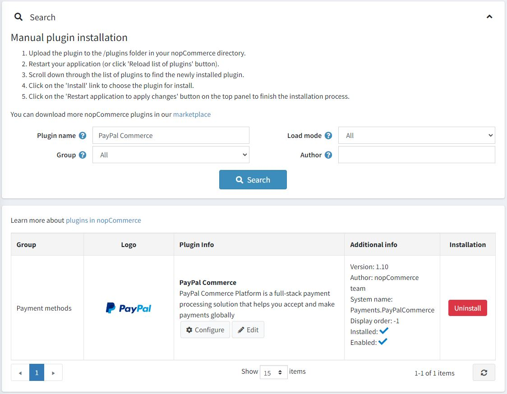

PayPal Commerce
PayPal Commerce gives your buyers a simplified and secure checkout experience. PayPal intelligently presents the most relevant payment types to your shoppers automatically, making it easier for them to complete their purchases using such methods as Pay with Venmo, PayPal Credit, credit card payments, iDEAL, Bancontact, Sofort, and other payment types.
Configure the payment method
To configure the PayPal Commerce plugin, go to Configuration → Payment methods. Then find the PayPal Commerce payment method in the payment method list:

Follow these steps to configure PayPal Commerce:
1. Activate the payment method
To do this, click the Edit button in the plugin row on the payment method list page. Activate the plugin by selecting the Is active checkbox. Click the Update button. Your changes will be saved.
2. Create a PayPal account
If you already have a PayPal account, just proceed to the next section. If you don't then register a Business account. You have two options to do this: you can register an account on the PayPal website or you can do this from the plugin configuration page. Let's briefly consider both options:
Register an account on the PayPal website
Register a Business account on PayPal. Just click the Sign up button there:

Then fill in the information about yourself and your business:

Note
If you already have an account, you will be redirected to the authorization.
Register an account from the plugin configuration page
Open the PayPal Commerce configuration page in the admin area. You will see the following form:

Enter your email address and let PayPal check everything out by clicking the Save button.
If everything is OK, you will see the following green notification and a newly added Sign up for PayPal button:

Click this button and you will see the following pop-up window allowing you to fill in some data and register an account:

You should pass through a few steps to fill in all the required data. The last one will ask you to confirm your email to activate your account.
3. Set up the Paypal Developer Dashboard
Log into the Developer Dashboard with your PayPal account credentials.
In My Apps & Credentials, use the toggle to switch between live and sandbox testing apps.

Navigate to the REST API apps section and click Create App.

Type a name for your app and click Create App. The app details page will open and display your credentials.
Copy and save the Client ID and Secret for your app.
Review your app details and save your app if you made any changes.
4. Configure the payment method in nopCommerce
Find the PayPal Commerce payment method on the Configuration → Payment methods page and click Configure. The Configure - PayPal Commerce page will be displayed as follows: 
Define the following settings on the Configure - PayPal Commerce page:
Specify API credentials manually - determine if you need to manually set credentials. Select this option if you already have an application created or if you want to use sandbox mode. Otherwise, the plugin will be set up automatically and you will be able to start accepting PayPal payments in your store after completing your PayPal registration.
Use sandbox if you want to test the payment method first.
Enter the Client ID you saved in the previous steps.
Enter the Secret you saved in the previous steps.
Choose the Payment type to either capture payment immediately or authorize payment for an order after order creation.
Then proceed to the PayPal Prominently panel:

On this panel, define the display settings:
Select the Display buttons on shopping cart checkbox to display PayPal buttons on the shopping cart page instead of the default checkout button.
Select the Display buttons on product details to display PayPal buttons on product details pages; clicking them matches the behavior of the default 'Add to cart' button.
Select the Display Pay Later messages box to take advantage of the pay later messaging feature on your website. The message is displayed on the product and checkout pages, showing how much the customer is paying in four installments.

Tick the Display logo in header links checkbox to display a PayPal logo in the header links. These logos and banners are a great way to let your buyers know that you choose PayPal to securely process their payments.
- If the previous checkbox is selected, the Logo source code field is displayed. In this field, enter the source code of the logo. Find more logos and banners on PayPal Logo Center. You can also modify the code to fit correctly into your theme and site style.
Tick the Display logo in footer checkbox to display a PayPal logo in the footer. These logos and banners are a great way to let your buyers know that you choose PayPal to securely process their payments.
- If the previous checkbox is selected, the Logo source code field is displayed. In this field, enter the source code of the logo. Find more logos and banners on PayPal Logo Center. You can also modify the code to fit correctly into your theme and site style.
Click Save to save the plugin settings.
Limit to stores and customer roles
You can limit any payment method to store and customer role. This means that the method will be available to certain stores or customer roles only. You can do this from the plugin list page.
Go to Configuration → Local plugins. Find the plugin you want to limit. In our case, it's PayPal Commerce. To find it faster, use the Search panel in the top of the page and search by Plugin name or Group using the Payment methods option.

Click the Edit button, and the Edit plugin details window will be displayed as follows:

You can set up the following limits:
In the Limited to customer roles field, choose one or several customer roles, that is, administrators, vendors, guests, who will be able to use this plugin. If you don't need this option just leave this field empty.
Important
In order to use this functionality, you have to disable the following setting: Catalog settings → Ignore ACL rules (sitewide). Read more about the access control list here.
Use the Limited to stores option to limit this plugin to a certain store. If you have multiple stores, choose one or several from the list. If you don't use this option, just leave this field empty.
Important
In order to use this functionality, you have to disable the following setting: Catalog settings → Ignore "limit per store" rules (sitewide). Read more about multi-store functionality here.
Click Save.